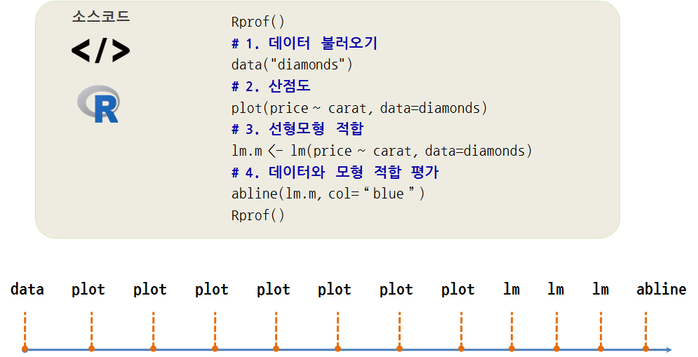
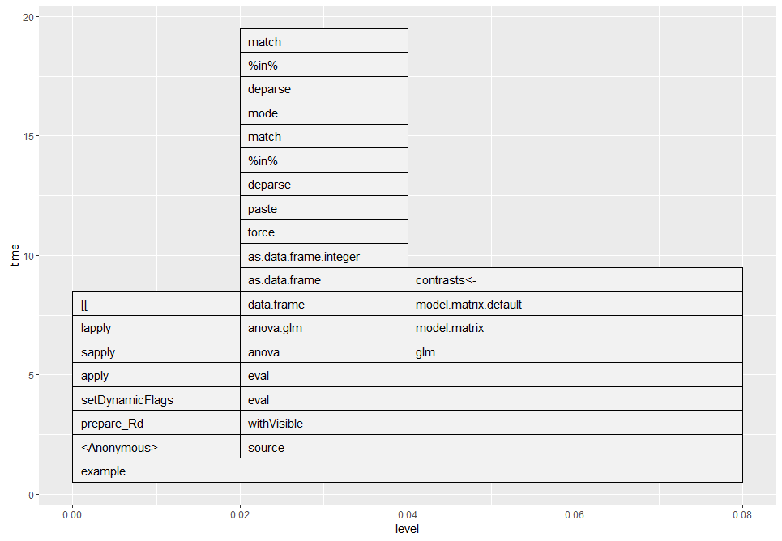

데이터 과학
정보수집 프로파일링(profiling) - profviz
학습 목표
- 정보수집 프로파일링(profiling)에 대해 이해한다.
- 프로파일링을 적용해서 성능병목점을 식별하고 성능을 향상시킨다.
1. 정보수집 프로파일링
R코드 어느 부분에서 가장 많은 수행시간과 메모리 저장공간을 사용했는지 파악하는 것이 중요하다. 수행시간과 메모리 저장공간을 측정하는데 사용되는 도구가 정보수집 프로파일링(Profiling) 이다.
system.time: 간단히 수행시간을 측정하는 함수Rprof: R코드 프로파일링하는 함수 1RprofmemR 메모리 사용량을 프로파일링하는 함수
Rprof, Rprofmem 함수를 추상화해서 시각화하는 팩키지가 profviz 로 출시되었고, rbenchmark 는 비교하는 목적으로 사용된다.
2. Rprof 프로파일링 2
Rprof 함수는 정해진 시간, 예를 들어 interval = 0.02 기본디폴트 설정값으로 되어 20 \(frac{1}{1000}\) 천분의 1초로 측정을 한다. 측정결과는 지정한 경로명에 위치한 파일에 저장되고, summaryRprof 함수로 꺼내본다.

Rprof 함수는 R에 기본 내장된 프로파일링 함수로 사용법은 다음과 같다.
Rprof("프로파일링 경과를 저장할 파일경로 및 파일명")
## 프로파일링을 통해 정보를 추적할 R 코드
Rprof(NULL)
## 프로파일링하지 않아 정보를 추정하지 않을 R코드
Rprof("프로파일링 경과를 저장할 파일경로 및 파일명", append=TRUE)
## 프로파일링을 통해 정보를 추적할 R 코드
Rprof(NULL)
# 프로파일링 추적결과를 요약하고 정리
summaryRprof("프로파일링 경과를 저장할 파일경로 및 파일명")2.1. Rprof 프로파일링 요약
by.self: 해당 함수가 온전히 사용한 시간by.total: 해당 함수와 호출된 함수 모두에서 사용된 시간sample.interval: 표본측정 시간, 기본디폴트설정으로 20 천분의 1초로 설정sampling.time: 프로파일링을 통해 수행된 전체 시간.
추가로 한번만 측정하면 측정 중간에 쓰레기수거(Garbage Collection, GC) 작업 등으로 인해 정확한 실행시간 측정에 오차가 발생할 수 있다. 이를 방지하고자, replicate를 사용해서 반복측정한다.
2.2. Rprof 사례
example(glm)을 통해 일반화선형모형을 적합하여 모형을 개발하는데 사용된 시간을 살펴본다. 전체적으로 80 천분의 1초가 소요되었으며 “ifelse”, “psub”, “set”, “unlist”에서 시간이 균등하게 사용된 것을 볼 수 있다.
##========================================================================
## Rprof 예제
##========================================================================
# 1. 프로파일링 시작
Rprof(tmp <- tempfile())
example(glm)
Rprof()
# 2. 프로파일링 결과 요약
summaryRprof(tmp)$by.self
self.time self.pct total.time total.pct
"ifelse" 0.02 25 0.02 25
"psub" 0.02 25 0.02 25
"set" 0.02 25 0.02 25
"unlist" 0.02 25 0.02 25
$by.total
total.time total.pct self.time self.pct
"example" 0.08 100 0.00 0
"<Anonymous>" 0.04 50 0.00 0
"paste0" 0.04 50 0.00 0
"print" 0.04 50 0.00 0
"source" 0.04 50 0.00 0
"ifelse" 0.02 25 0.02 25
"psub" 0.02 25 0.02 25
"set" 0.02 25 0.02 25
"unlist" 0.02 25 0.02 25
".getHelpFile" 0.02 25 0.00 0
"data.matrix" 0.02 25 0.00 0
"format_perc" 0.02 25 0.00 0
"formatC" 0.02 25 0.00 0
"lazyLoadDBexec" 0.02 25 0.00 0
"of0" 0.02 25 0.00 0
"of1" 0.02 25 0.00 0
"pmax" 0.02 25 0.00 0
"prepare_Rd" 0.02 25 0.00 0
"print.anova" 0.02 25 0.00 0
"print.summary.glm" 0.02 25 0.00 0
"printCoefmat" 0.02 25 0.00 0
"quantile" 0.02 25 0.00 0
"quantile.default" 0.02 25 0.00 0
"remap" 0.02 25 0.00 0
"render" 0.02 25 0.00 0
"setNames" 0.02 25 0.00 0
"writeLines" 0.02 25 0.00 0
"WriteLines" 0.02 25 0.00 0
$sample.interval
[1] 0.02
$sampling.time
[1] 0.082.3. Rprof 시각화
숫자를 통해 프로파일링 결과를 살펴보는 것도 의미가 있지만, 시각화를 통해 전체적인 프로파일링 정보를 살펴본다. profr 팩키지를 설치하고 ggplot2 시각화 팩키지로 프로파일링된 결과를 살펴본다.
일반선형모형을 적합시킨 결과 콜스택 깊이가 20까지 올라간 것도 확인이 된다.
##========================================================================
## Rprof 시각화
##========================================================================
install.packages("profr")
library(profr)
library(ggplot2)
x = profr(example(glm))
ggplot(x)
2.4. diamonds 회귀분석 프로파일링 예제
profr로 시각화하는데 data("diamonds") 부터 abline(lm.m, col = "blue")까지 R코드 실행부분을 별도 R스크립트로 저장하였다.
##========================================================================
## 다이아몬드 데이터
##========================================================================
# 1. 텍스트 정보
Rprof(tmp <- tempfile())
data("diamonds")
# 1. 산점도
plot(price ~ carat, data=diamonds)
# 2. 선형모형 적합
lm.m <- lm(price ~ carat, data=diamonds)
# 3. 데이터와 모형 적합 평가
abline(lm.m, col = "blue")
Rprof()
summaryRprof(tmp)
# 2. 시각화
library(profr)
library(ggplot2)
x = profr(source("diamonds-prof-ex.R"))
ggplot(x)